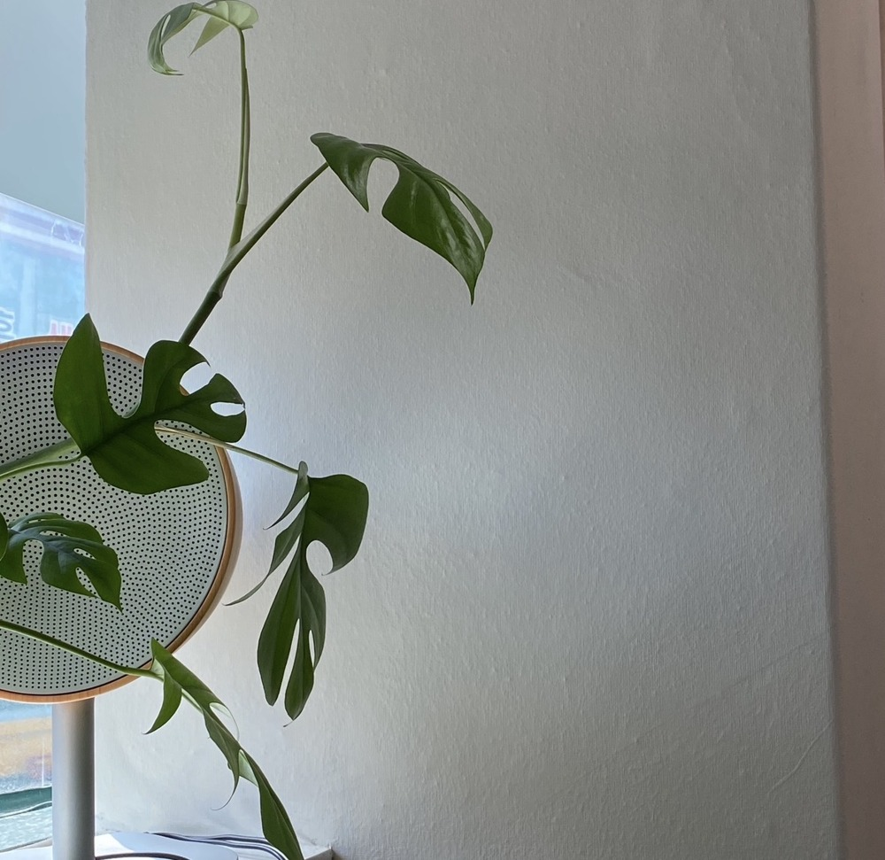

ENOCH MUSIC ACADEMY
RAINY DAY 01 / 02
우산과 텀블러 하나 챙겨서 연습실로,
비 오는 날의
연습
01
02
에녹실용음악학원 시흥점
031 315 3666
ENOCH MUSIC ACADEMY
RAINY DAY 02 / 02
비 오는 날은
내 소리에 집중하기 좋습니다.
목이 덜 건조해서 소리 내기 편하고,
빗소리는 일정해서 다른 소음이 덜 들려요.
03
04

에녹실용음악학원 시흥점
031 315 3666